| Volume 1, Year 2014 - Pages 30-37 | View PDF (Full-text) |
| DOI: 10.11159/jffhmt.2014.005 | Linked References |
| ISSN: 2368-6111 | |
A Well-Balanced 2-D Model for Dam-Break Flow with Wetting and Drying
Xin Liu, Abdolmajid Mohammadian, Julio Angel Infante Sedano
Department of Civil Engineering, University of Ottawa, 161 Louis Pasteur, Ottawa, Ontario, Canada K1N 6N5
xliu111@uottawa.ca; majid.mohammadian@uottawa.ca; jinfante@uottawa.ca
Abstract- This paper presents a two-dimension (2-D) numerical model for simulating dam-break flow involving wet-dry fronts over irregular topography. The Central-upwind scheme is chosen to calculate interface fluxes for each cell edge. A second order spatial linear reconstruction with multidimensional limiter and second order TVD Runge-Kutta scheme are chosen to acquire high order accuracy in space and time. Non-negative water reconstruction of variables at cell interfaces and compatible discretization of slope source term lead to stable and well-balanced scheme for hydraulics over irregular topography. The friction term is discretized with a semi-implicit scheme for numerical stability when very small water depth exists. An accurate and effective technique is presented for tracking wetting-drying interfaces during the process of wave front propagation on dry bed. The capacity and accuracy of current model are verified by several benchmark tests as well as a real dam-break case, and good performances are achieved in tests.
Keywords:Dam-break flow, Central-upwind method, Well-balanced, Wetting and drying, Finite volume method.
© Copyright 2014 Authors - This is an Open Access article published under the Creative Commons Attribution License terms. Unrestricted use, distribution, and reproduction in any medium are permitted, provided the original work is properly cited.
Date Received: 2014-05-09
Date Accepted: 2014-08-08
Date Published: 2014-10-14
Nomenclature
| t | The simulating time |
| h | The water depth |
| x | The horizontal coordinate |
| y | The horizontal coordinate |
| u | The depth-averaged velocity components in x direction |
| v | The depth-averaged velocity components in y direction |
| z | The bed elevation |
| g | The gravitational acceleration |
| vt | The eddy viscosity coefficient |
| nb | The Manning's roughness coefficient |
| The friction slope terms in the x direction | |
| 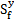 | The friction slope terms in the y direction |
| η | The water surface level |
| nx | The components of unit normal vector in the x direction |
| ny | The components of unit normal vector in the y direction |
| lik | The length of the kth edge of control volume i |
| Fik | The numerical convective flux across lik |
| The diffusive flux across lik in the x direction | |
| The diffusive flux across lik in the x direction | |
| UR | The one-sided local speed of propagation on right side of kth edge |
| UL | The one-sided local speed of propagation on left side of kth edge |
| SR | The one-sided local speeds of propagation on right side of kth edge |
| SR | The one-sided local speeds of propagation on left side of kth edge |
| ε | The threshold for defining wet and dry cells |
1. Introduction
Dam-break flows over irregular bed often experience the cases as transcritical flows, steep bed slope, very small water depth, cells' wetting and drying, wave propagation. Inappropriate hydraulic simulation may leads to inaccurate and unstable prediction. Hence, it's necessary to apply a robust, accurate and effective hydraulic model to predict Hydraulic parameters of dam-break flow.
By using Godunov-type scheme, complicated shallow water flow phenomena such as transcritical flows, shock-type flows and moving wet-dry interface of a water wave front can be appropriately simulated. To solve a Godunov-type scheme, approximate Riemann solver is normally adopted to estimate the numerical fluxes of hyperbolic system and various numerical schemes have been proposed to solve Riemann problems. As explained in the next section, the Central-upwind method which is applied in current study, does not require computationally expensive decomposition of numerical flux on the basis of eigenvalues and furthermore, only an estimation of largest and smallest eigenvalues of the Jacobian matrix, which leads to a significant reduction of computational cost.
Flow over initially dry bed is very common in dam break flows, which involves complicated boundary conditions. For irregular topography, both positive and negative bed slopes generally exist, which may leads to cell drying and wetting with moving fronts which could not be easily solved by horizontal boundary condition. Some techniques have been developed in using finite volume method and shallow water equations. Zhao et al. [19] and Sleigh et al.[14] introduced two similar schemes to track the wetting and drying fronts, in which cells are divided into wet, dry and partially dry types according to two tolerances. Brufau et al. [2, 3] proposed a technique using unsteady wetting and drying conditions in flows and claimed that the method gave zero mass error, which is valid for an FVM with only first-order accuracy. Falconer et al. [5] and Falconer et al. [6] developed a wetting and drying method for regular grid finite difference model, which is recently refined for triangular grids by Xia et al. [17]. In present study, a technology for tracking wet-dry front is developed combing with method of Brufau et al. [3] to achieve zero mass error.
It is well-known that accuracy is the most important aspect for flow solver since it has a direct influence on the number of computational cells required. This means that a higher-order implementation involving a piecewise linear reconstruction is necessary. Higher order schemes often produce nonphysical oscillations which can be effectively suppressed by using limiters. In the present study, the multidimensional limiter proposed by Jawahar et al. [9] is adopted to calculate the limited gradient for reconstruction of variables. Moreover, a second order accuracy in time could be obtained in current model by apply Runge-Kutta scheme.
Based on the efficient divergence form of the slope source term proposed by Valiani et al. [16], Hou et al. [8]developed a novel slope source term treatment which is devised to transform the slope source of a cell into a flux form. By splitting the integral of the bed slope source term over a cell into those of the sub-cells, higher accuracy can be achieved by the novel treatment than that proposed by Valiani et al. [16]. This method can strictly preserve the well-balanced property and can be conveniently employed with second order or even higher order schemes. In addition, this treatment is able to handle the occurrence of wet-dry fronts, in conjunction with the non-negative water depth reconstruction.
2. Numerical Scheme
The 2-D shallow water is adopted in the current study as governing equations which can be described as:
The 2-D shallow water equations constitute a hyperbolic system which can be presented in the following vector form:
in which t = time, h = the water depth, x and y are horizontal coordinates, u and v are the depth-averaged velocity components in x and y directions respectively, Z is the bed elevation, g is the gravitational acceleration, vtis eddy viscosity coefficient given by 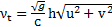, nb is Manning's roughness coefficient. and are friction slope terms in the x, y directions, respectively, which can be determined by conventional formulas involving Manning roughness coefficient nb, 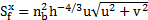, 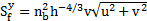. Besides, in this work, water surface level η is used in the second order spatial reconstruction and the non-negative water depth reconstruction. η can be calculated as 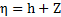.
2.1. Discretization of Flow and Sediment Governing Equations
The coupled system is discretized on an unstructured triangular grid by finite volume method.
in which nx and ny are components of unit normal vector in the x and y directions, lik is the length of the kth edge of control volume i, Fik is numerical convective flux across lik, is the diffusive flux across lik.
2.2. Central-upwind scheme for the interface flux
Central-upwind schemes on general triangular grids for solving two-dimensional systems of conservation laws are developed by Kurganov et al. [11], which enjoy the main advantages of the Godunov-type central schemes, i.e. simplicity, universality and robustness and can be applied to problems with complicated geometries. The triangular central-upwind schemes are based on the use of the directional local speeds of propagation and are a generalization of the central-upwind schemes on rectangular grids, introduced in [10].
Applying the Central-upwind scheme, the convective fluxes in Eqs. (7) could be estimated by:
in which 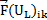 and 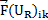 are normal fluxes on the left and right sides of the kth edge, respectively. SRand SL are one-sided local speeds of propagation on right and left sides of kth edge, respectively, and can be determined by
with 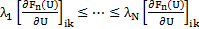 being the N eigenvalues of the Jacobian matrix using reconstructed variables 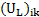 or 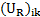.
It can be deduced that, when a cell is dry or nearly dry, 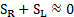 exists in denominator of equation Eqs. (8) which may cause numerical instability. In order to handle this situation that both SRand SL are zero (or very close to zero), following the suggestion in Bryson et al. [4], the scheme Eqs. (8) reduces to:
2.3. Spatial linear Reconstruction
In this paper, the following 2-D linear reconstruction is employed:
in which 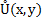 is the reconstructed value of variables at point inside of cell i, and 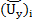 are component-wise approximation of numerical derivatives which are computed via a nonlinear limiter, used to minimize the oscillations of the reconstructions. In current study, the multidimensional limiter proposed by Jawahar et al. [9] is adopted to calculated limited gradient 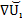 within a cell by taking the weighted average of three representative unlimited gradients.
In order to preserve the well-balanced property
for second order schemes, as suggested by Audusse et al. [1], surface levels
, , water depths 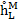, 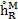, flow discharges 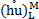, 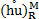, and 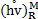 are reconstructed at the midpoint of considered edges. The reconstructed bed levels at M are given by
and 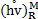 are reconstructed at the midpoint of considered edges. The reconstructed bed levels at M are given by
Besides, flow velocities required at M are computed as
A threshold ε will be introduced for defining wet and dry cells. The second order reconstructions are only applicable to the wet cells.
2.4. Non-negative water depth reconstruction
A robust and efficient reconstruction approach to preserve non-negative water depth which is suggested by Liang et al. [12] is adopted in present study. The ZM bed elevation at the midpoint of the considered edge is calculated as:
Then the non-negative water depth values on both sides are reconstructed as:
The discharges at M are in turn reconstructed as:
2.5. Treatment of the source term
2.5.1. Well-balanced treatment of the slope source term
Hou et al. [8] developed a novel slope source term treatment which is devised to transform the slope source of a cell into a flux form, which can strictly preserve the well-balanced property and can be conveniently employed with second order or even higher order schemes. In addition, this treatment is able to handle the occurrence of wet-dry fronts, in conjunction with the non-negative water depth reconstruction. The vector of source term at the considered faces k in cell i becomes
where ZM and 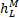 are obtained by spatial linear reconstruction.
2.5.2. Calculation of derivatives in source terms
The approach adopted by Mohammadian et al., [13] is used to calculate the unlimited gradient of variables. A similar approach may be also applied to calculate the diffusive terms 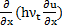, 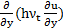, 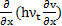 and 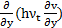.
2.5.3. Friction source term treatment
In current study, a simple semi-implicit treatment suggested by Yoon et al. [18] is adopted to deal with very shallow water depth.
in which the superscript n denotes the time step.
2.6. Time integration and CFL condition
In order to obtain the second-order accuracy in time and retain the stability of the model, the two-stage explicit TVD Runge-Kutta method is applied in current study. The time step is limited by the Courant-Friedrichs-Lewy (CFL) condition.
2.7. Treatment of wetting and drying fronts
Wetting and drying fronts need to be specially treated to retain the numerical stability when very tiny water depth is introduced. In current model, a scheme of wetting and drying treatment is proposed which can be summarized as:
1. A tolerance water depth ε is introduced to classify the wet and dry cell. In present model, 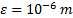 is used. In the dry cell, first order reconstruction will be applied to maintain the numerical stability.
2. For dry cell with 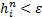, only continuity equation will be solved to deal with potentially wetting.
3. To deal with the cell-drying, if a cell with 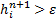, it's treated as completely dry cell in next time-step and all hydraulic parameters are set to zero in this cell.
3. Numerical Tests
3.1. Quiescent water around a hump with sediment deposition
The first test is applied to verify the well-balanced property preserving of present model involving wet-dry interfaces. To implement this test, the elevation of a hump on flat bed is defined as:
The hump is located at the center of a 8m×8m computational domain, the height of the bump is 2m. A quiescent lake around the dump is defined with initial water surface elevation of 1m, so the test could involve the wet-dry interface. Fig. 1 shows the 3d views of simulated bed profile and still water surface at t=50s. The undisturbed water surfaces are observed through the whole simulating process.
3.2. 2-D shorelines tracking in a parabolic bowl
This test is adopted here to investigate the hydraulic model and the accuracy of tracking the wetting and drying fronts. The bottom topography with the center (x0,y0) is defined as:
in which h0 is the water depth at the center of the domain, a is the distance from the center to the edge of the shoreline. Since the topography is set to be frictionless in this test, as described in [15], the periodic analytical solution of the evolutions of surface elevation, water depth and velocities can be computed using following equations:
in which, σ is a constant that determines the amplitude of the motion; 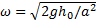 is the frequency of the pool's circulation around the center of the bowl.
In this test for current model, a 4m×4m domain is chosen, which is discretized to 14836 triangular cells, as shown in Fig. 2. The four boundaries are set to wall-boundary. According to the dimension, the parameters h0=0.1 m, a=1.0m and σ=0.5m. The initial flow states are defined by Eqs. (20) and Eqs. (21) at t=0s.
Fig. 3 shows the comparison between simulated water surface profiles and analytical solutions at t=3T and 3.5T, respectively, where T represents the circulation period of the pool. It can be observed that the calculated free surface from current model agrees well with the analytical solution, no obvious distortion is observed near the shorelines, the treatment of wetting and drying boundaries successfully handle the task of tracking moving wet-dry fronts. Fig. 4 shows the velocity of circulating pool at t=3.5T, no unphysical high velocity is observed near the shoreline where very shallow water exists. The around area preserve zero velocity when it becomes dry.
3.3. 2-D partially dam-break flow on initially dry bed
For examining the numerical performance of the present scheme, a 2-d dam break problem with rapid varying unsteady flow is chosen as test cases. This test case is firstly introduced by Fennema et al. [7] in a numerical method study, which has been widely used by many researchers. The original case is mostly applied on an initially wet and fixed bed. It is adopted here for the aim of testing the capacity of current model to simulate the front wave propagation over an initial dry bed with wet-dry interface tracking, with a particular attention to the 2D aspects of the flow motion; and the model performance in prediction of fast erosion under high energetic flow in large scale. The modeling domain area is a 200m×200m basin over a flat and dry bed. A 10m-thick dam splits the basin into two equal-sized regions. The water depths are 10m and 0m on the left and right sides of the dam, respectively. At t = 0s, a 75m wide breach centered at y = 125m is assumed to form instantaneously. The duration of the simulation is 12s. The initial velocity of the whole modeling area is 0m/s and the outlet boundary at x = 200m is specified with a free out flow boundary condition, meanwhile all other boundaries are set to be standard wall condition. The simulating domain is discretized into 6806 triangular cells, as shown in Fig. 5.
Fig.6 shows 3D views of the water front-wave propagations and predicted bed erosion at varying times (first row). It can be seen that a shock wave forms and propagates downstream and a depression wave spreads upstream during the simulating process, no unphysical high velocities and oscillations are generated at the front-wave locations where wetting and drying interfaces are existing. The velocity field with contour of water depth is present in second row.
4. Conclusion
A robust two-dimensional numerical model for dam-break flow with wetting and drying is proposed in current study, based on finite volume method using unstructured triangular grids. The Central-upwind scheme can accurately estimate the convective fluxes. Current model can strictly preserve the well-balanced property with vector-form discretization of slope source term in conjunction with nonnegative water depth reconstruction. The semi-implicit method on friction slope term maintains the stability of present model. The adopted wetting and drying scheme could efficiently track the wet-dry fronts. The testing results confirm the capacity and accuracy of current model in dealing with various cases of dam-break flow over irregular bed in practical conditions.
Acknowledgements
This publication was made possible by NPRP grant #4-935-2-354 from the Qatar National Research Fund (a member of Qatar Foundation). The statements made herein are solely the responsibility of the authors.
References
[1] Audusse, E., Bristeau, M. O. (2005). A well-balanced positivity preserving "second-order" scheme for shallow water flows on unstructured meshes. Journal of Computational Physics, 206(1), 311-333. View Article
[2] Brufau, P., Vázquez‐Cendón, M. E., García‐Navarro, P. (2002). A numerical model for the flooding and drying of irregular domains. International Journal for Numerical Methods in Fluids, 39(3), 247-275. View Article
[3] Brufau, P., García‐Navarro, P., Vázquez‐Cendón, M. E. (2004). Zero mass error using unsteady wetting-drying conditions in shallow flows over dry irregular topography. International Journal for Numerical Methods in Fluids, 45(10), 1047-1082. View Article
[4] Bryson, S., Epshteyn, Y., Kurganov, A., Petrova, G. (2011). Well-balanced positivity preserving central-upwind scheme on triangular grids for the Saint-Venant system. ESAIM: Mathematical Modelling and Numerical Analysis, 45(3), 423-446. View Article
[5] Falconer, R.A. and Chen, Y., (1991). An improved representation of flooding and drying and wind stress effects in a 2D tidal numerical model. Proceedings of the Institution of Civil Engineers Part 2(Research and Theory), 91, 659-672.
[6] Falconer, R.A.,et al., (2001). DIVAST model: reference manual. Internal Report, Hydro-Environmental Research Centre, School of Engineering, Cardiff University, 35 pp.
[7] Fennema, R. J., Chaudhry, M. H. (1990). Explicit methods for 2-D transient free surface flows. Journal of Hydraulic Engineering, 116(8), 1013-1034. View Article
[8] Hou, J., Simons, F., Hinkelmann, R., (2013). A 2D well-balanced shallow flow model for unstructured grids with novel slope source treatment, Advances in Water Resources, 52, 107-131. View Article
[9] Jawahar, P., Kamath, H. (2000). A high-resolution procedure for Euler and Navier-Stokes computations on unstructured grids. Journal of Computational Physics, 164(1), 165-203. View Article
[10] Kurganov, A., Noelle, S., and Petrova, G., (2001). Semi-discrete central-upwind scheme for hyperbolic conservation laws and Hamilton-Jacobi equations, SIAM J Sci Comput, 23, 707-740. View Article
[11] Kurganov, A., Petrova, G. (2005). Central‐upwind schemes on triangular grids for hyperbolic systems of conservation laws. Numerical Methods for Partial Differential Equations, 21(3), 536-552. View Article
[12] Liang, Q. (2010). Flood simulation using a well-balanced shallow flow model. Journal of hydraulic engineering, 136(9), 669-675. View Article
[13] Mohammadian, A., Tajrishi, M., Lotfiazad, F. (2004). Two dimentional numerical simulation of flow and geo-morphological processes near headlands by using unstructured grid. International Journal of Sediment Research, 4, 001. View Article
[14] Sleigh, P. A., Gaskell, P. H., Berzins, M., Wright, N. G. (1998). An unstructured finite-volume algorithm for predicting flow in rivers and estuaries. Computers & Fluids, 27(4), 479-508. View Article
[15] Thacker, W. C. (1981). Some exact solutions to the nonlinear shallow-water wave equations. Journal of Fluid Mechanics, 107, 499-508. View Article
[16] Valiani, A., Begnudelli, L. (2006). Divergence form for bed slope source term in shallow water equations. Journal of Hydraulic Engineering, 132(7), 652-665. View Article
[17] Xia, J., Falconer, R. A., Lin, B., Tan, G. (2010). Modelling flood routing on initially dry beds with the refined treatment of wetting and drying. International Journal of River Basin Management, 8(3-4), 225-243. View Article
[18] Yoon, T. H., Kang, S. K. (2004). Finite volume model for two-dimensional shallow water flows on unstructured grids. Journal of Hydraulic Engineering,130(7), 678-688. View Article
[19] Zhao, D. H., Shen, H. W., Tabios III, G. Q., Lai, J. S., Tan, W. Y. (1994). Finite-volume two-dimensional unsteady-flow model for river basins. Journal of Hydraulic Engineering, 120(7), 863-883. View Article